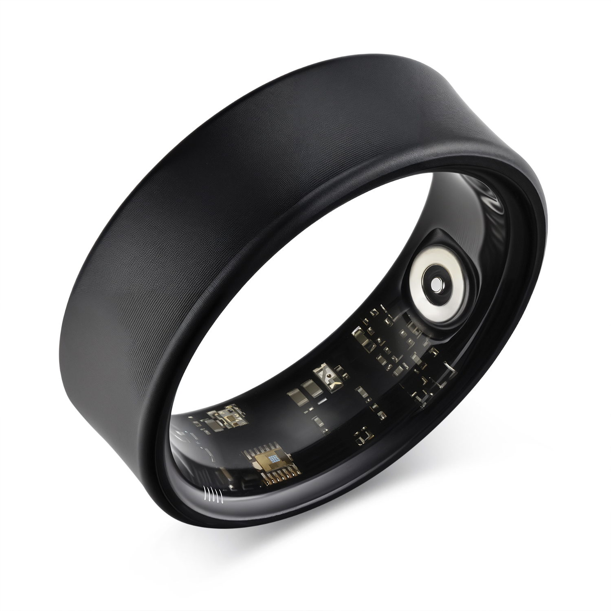
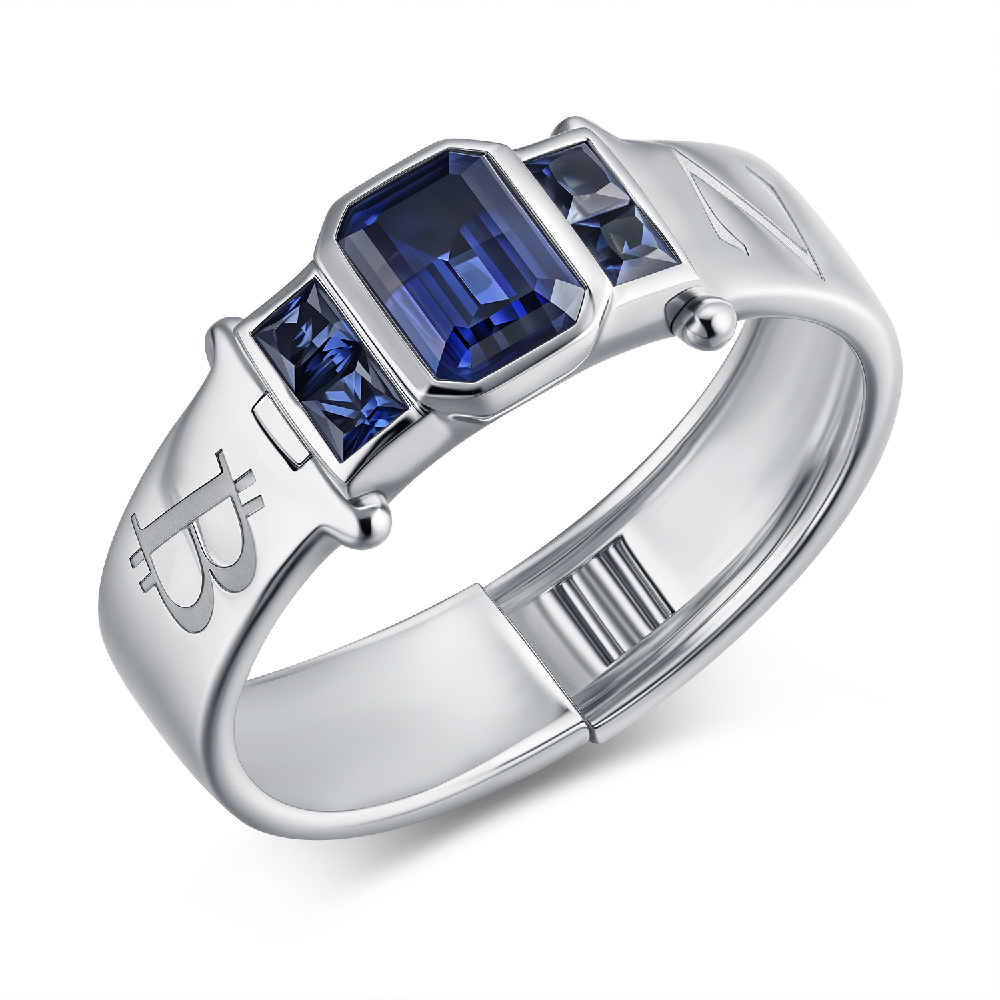

守护你的
每一念 · 每一息
ZENITY 智能戒指，以精准HRV监测、转动计数与触觉计时，将千年禅修、内丹、默观、齐克尔与卡巴拉智慧凝于指尖。透过数字加密，计量修行能量，让你的灵性旅程真实可触。

修行之戒 · 三环合一设计
专利嵌套环技术 — 内环感知你的身体，外环升华你的灵魂，二者合一，成为完整。

智能感应内环
修行的根基。内置HRV传感器、陀螺仪和触觉马达 — 全天候监测您的呼吸、心跳与运动，守护每一次心息相依。
- HRV心率变异性传感器
- 7天超长续航
- IP68防水等级
- 触觉反馈马达
嵌套技术

宝石镶嵌外环
修行的荣光。精工打造的高级金属材质，镶嵌璀璨宝石 — 通过我们的专利嵌套技术，精密贴合于内环之上，天衣无缝。
- 高级黄金与钻石
- 专利嵌套设计
- 多样化表面工艺
- 独立唯一编号
完成
ZENITY 组合戒指
完整的修行伴侣。科技与传统的融合 — 内环精密与外环典雅的无缝结合，随时守护您灵性旅程中的每一念、每一息。
- 完整智能系统
- 卓越工艺品质
- 全天候舒适佩戴
- 安全嵌套锁定
贯通五教 · 一戒共修
无论你是禅修者、丹道修士、默观者、苏菲旋转者或卡巴拉追寻者，ZENITY将你的心跳翻译为修行的语言。
佛教 · 正念
念佛计数 · 一炷香禅坐 · 昏沉提醒
HRV“心一境性”指数
道教 · 内丹
转河车计数 · 四正时提醒 · 子午卯酉
气血解读 · 守窍火候
基督教 · 默观
玫瑰经计数 · 时辰祈祷 · 耶稣祷文
静谧度分析 · 四旬期挑战
伊斯兰 · 齐克尔
99尊名赞念 · 泰斯比哈分组 · 五时拜功
胡杜尔指数 · 斋月修行报告
犹太教 · 德维库特
百福计数 · 数奥梅尔49天 · 安息日模式
灵魂加添指数 · 妥拉诵读记录
心率变异性
实时HRV追踪
副交感神经平衡度
呼吸节律
呼吸性窦性心律不齐
RSA深度解读“心一境性”
昏沉/掉举识别
智能振动提醒“提起正念”或“回归呼吸”
如同善知识在旁
指间法器 · 触觉修行
轻转戒指 — 如拨念珠，自动累计念佛、赞词、祝福次数。双指长按启动禅坐计时，结束时温柔震动，仿若“一炷香尽”。内置陀螺仪可识别拜佛、划圣号、转河车等手势，将传统仪轨化为精准数据。
- 旋转计数：佛号/泰斯比哈/百福/玫瑰经
- 震动计时：时辰祈祷/五时拜功/一炷香/闭关模式
- 手势识别：拜佛、划十字、画圆转河车
当前计数：0
佩戴于指 · 感应心念
⚡ 修行能量 · 加密印记
每一段冥想、每一次记念都被转化为不可篡改的修行能量值。透过区块链哈希存证，你的灵性精进成为数字时代的“功德账本”，私密且永恒。
基于您每次冥想HRV深度·时长·计数行为生成能量凭证，链上守护修行的每一刻。
修行者的日用之伴
“打坐时昏沉常困扰我，ZENITY轻振提醒让我回到呼吸，如同师父在旁。HRV心一境性指数让进步变得可见。”
—— 明心，禅修者“斋月期间戒指记录我的夜间礼拜与齐克尔，泰斯比哈计数自动分组，胡杜尔指数真实反映心灵宁静。”
—— Amina，苏菲修习者“安息日模式自动关闭干扰，记录灵魂加添的能量。百福计数让每日祝福不再遗漏。”
—— David，卡巴拉追随者